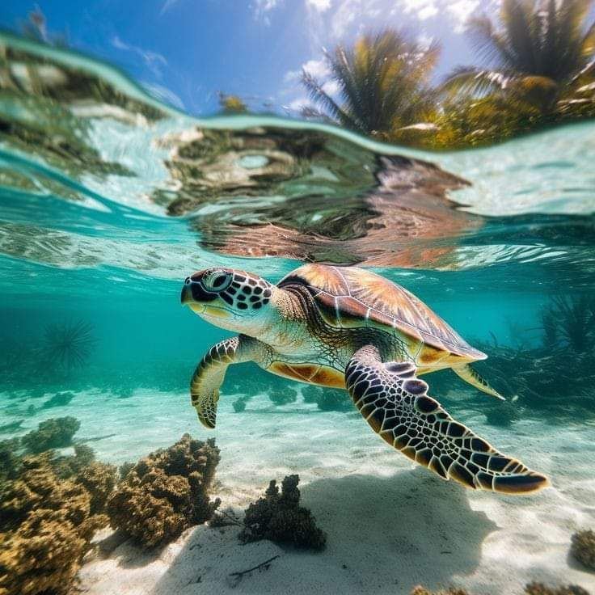
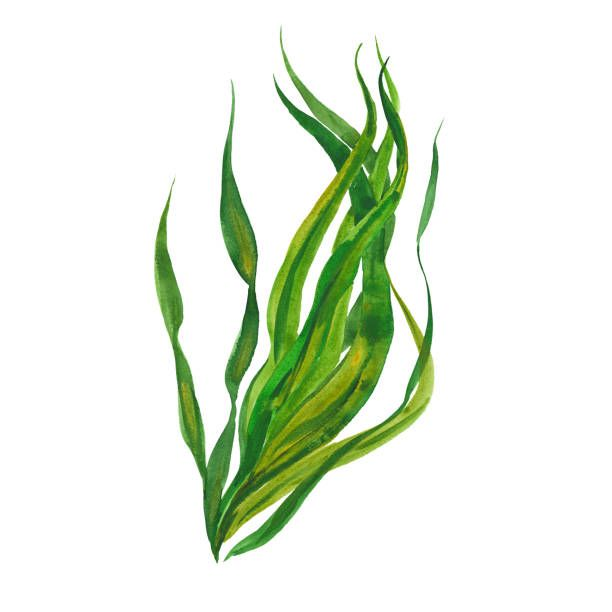
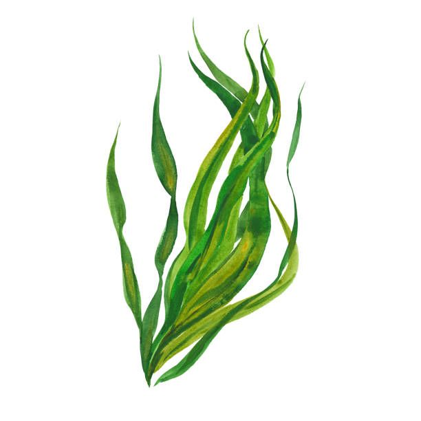

Η ΟΜΑΔΑ ΜΑΣ:Polis DIVE Team από το Γυμνάσιο Πόλης Χρυσοχούς
Είμαστε μια ομάδα παθιασμένων μαθητών, καθοδηγούμενων από τον αφοσιωμένο δάσκαλό μας, σε μια αποστολή να προστατεύσουμε τη θαλάσσια ζωή, ειδικά τις πράσινες χελώνες και τα λιβάδια της ποσειδωνίας. Στις παραλίες μας εκατοντάδες χελώνες έρχονται να γεννήσουν κάθε χρόνο, αλλά δυστυχώς στην περιοχή που δεν κάνουμε πολλά για να βοηθήσουμε αυτές τις χελώνες, οπότε θέλουμε να κάνουμε κάτι γι'αυτό.
Ο ΣΤΟΧΟΣ ΜΑΣ
Στόχος μας είναι να ευαισθητοποιήσουμε, να εκπαιδεύσουμε την κοινότητά μας και να αναλάβουμε δράση για να προστατέψουμε αυτά τα απίστευτα πλάσματα και τα ενδιαιτήματά τους. Μέσω της ιστοσελίδας μας, μοιραζόμαστε σημαντικές πληροφορίες σχετικά με τις θαλάσσιες χελώνες, τις απειλές τους και πώς μπορεί ο καθένας να βοηθήσει. Μαζί, μπορούμε να κάνουμε τη διαφορά για τους ωκεανούς μας και τη ζωή μέσα τους!

Πρώτα κάντε αυτό το τεστ για να δείτε πόσα γνωρίζετε για τις πράσινες χελώνες και τα λιβάδια ποσειδωνίας
Γιατί επιλέξαμε την πράσινη χελώνα
Επιλέξαμε την Πράσινη Χελώνα γιατί είναι ένα από τα δύο είδη θαλάσσιων χελωνών που επισκέπτονται και αναπαράγονται στις ακτές της Κύπρου. Σε αντίθεση με άλλες θαλάσσιες χελώνες, η Πράσινη Χελώνα τρέφεται κυρίως με λιβάδια της Ποσειδωνίας,παίζοντας έτσι σημαντικό ρόλο στη διατήρηση της υγείας των θαλάσσιων οικοσυστημάτων. Η προστασία της είναι ζωτικής σημασίας για την ισορροπία των θαλάσσιων λιβαδιών και τη βιοποικιλότητα των ακτών μας.
Χαρακτηριστικά πράσινων χελώνων


Βασικά Χαρακτηριστικά
Μέγεθος: Φτάνει σε μήκος τα 80-150cm
Βάρος: Μπορεί να φτάσει μέχρι και τα 200kg.
Χρώμα (χελώνας): Πράσινο
Χρώμα (καβουκιού): Αποχρώσεις του καφέ, πράσινου ή ακόμα και κιτρινωπού
Διάρκεια Ζωής: Συνήθως ζει 60-80 χρόνια
Επιστημονικό όνομα: Chelonia mydas
Διατροφή
- Ως νεαρή χελώνα τρέφεται με ζώα και φυτά
- Ως ενήλικη χελώνα γίνεται κυρίως φυτοφάγα (τρώγοντας φύκια και θαλάσσια χόρτα)


Αναπαραγωγή
Που τα γεννά; Οι θηλυκές γεννούν τα αυγά τους σε αμμώδης παραλίες στις οποίες γεννήθηκαν και οι ίδιες. Στη Μεσόγειο οι πράσινες χελώνες χρησιμοποιούν σχεδόν αποκλειστικά τις παραλίες της Κύπρου και της Τουρκίας για τη φωλεοποίηση τους
Κάθε πόσο γεννούν; Κάθε 2-4 χρόνια
Πόσα αυγά γεννούν; Περίπου 100-200 αυγά σε κάθε φωλιά
Φύλο των νεογέννητων χελωνών
Από που καθορίζεται; Καθορίζεται από τη θερμοκρασία της άμμου της φωλιάς.
Σε υψηλότερες θερμοκρασίες: Θηλυκά χελωνάκια
Σε ψυχρότερες θερμοκρασίες: Αρσενικά χελωνάκια


Μετανάστευση
Οι χελώνες είναι μεταναστευτικά είδη.
Μπορείς να τις συναντήσεις σε τροπικές και υποτροπικές θάλασσες σε όλο τον κόσμο.
Μείωση πληθυσμού της χελώνας
Η μεγαλύτερη μείωση του πληθυσμού της χελώνας αυτής παρατηρήθηκε τις δεκαετίες του 1920-1960.
Ένας τεράστιος αριθμός τότε πράσινων χελωνών, γύρω στις 100.000 είχαν φονευθεί για εξαγωγή στην Ευρώπη, εξαιτίας της μεγάλης ζήτησης που είχε η χελώνα για το κρέας της και την χελωνόσουπα.
13 Λόγοι γιατί είναι σημαντικά τα λιβάδια ποσειδωνίας


1.Παραγωγή Οξυγόνου
2.Προστασία από Κλιματική Αλλαγή
3.Καταφύγιο Ζωής
4.Προστασία Ακτών
5.Αναπαραγωγικός Χώρος
6.Φίλτρα Νερού
7.Ισορροπία Οξίνισης
8.Οικονομική Αξία
9.Προστασία Θαλάσσιων Ειδών
10.Ανθεκτικότητα σε Καταιγίδες
11.Αργή Ανάπτυξη
12.Προστασία από Υποθαλάσσιο Θόρυβο
13.Νομική Προστασία


13 Τρόποι να προστατεύσουμε τα λιβάδια ποσειδωνίας και τις χελώνες
 

1.Εκπαίδευση και Ευαισθητοποίηση: Δημιουργία ενημερωτικών καμπανιών για τη σημασία των λειβαδιών ποσειδωνίας και της πράσινης χελώνας.
2.Προστασία θαλάσσιων περιοχών: Ίδρυση θαλάσσιων προστατευόμενων περιοχών όπου απαγορεύονται οι βλαβερές δραστηριότητες.
3.Κανονισμός αλιείας: Εφαρμογή και τήρηση βιώσιμων πρακτικών αλιείας, περιορισμός της υπεραλίευσης και προστασία των αναπαραγωγικών περιοχών.
4.Μείωση ρύπανσης: Θέσπιση αυστηρών κανονισμών για τη μείωση της ρύπανσης από πλαστικά, χημικά και απορρίμματα.
5.Διαχείριση του τουρισμού: Προώθηση βιώσιμου τουρισμού και περιορισμός της προσέλευσης σε ευαίσθητες περιοχές.
6.Προστασία υποδομών για χελώνες: Δημιουργία ειδικών υποδομών για να ασφαλίσουν τις χελώνες κατά τη διάρκεια της αναπαραγωγής τους.
7.Έρευνα και παρακολούθηση: Υποστήριξη επιστημονικών ερευνών για την παρακολούθηση των πληθυσμών της ποσειδωνίας και της χελώνας.
8.Επανάκαμψη των λειβαδιών: Υποστήριξη προγραμμάτων επαναφύτευσης ποσειδωνίας σε κατεστραμμένες περιοχές.
9.Έλεγχος υπεραλίευσης και συνεργασία με ψαράδες: Δημιουργία συνεργασιών με τοπικούς ψαράδες για την προστασία των λειβαδιών και της θαλάσσιας ζωής.
10.Χρήση βιώσιμων υλικών: Προώθηση της χρήσης βιοδιασπώμενων υλικών και μεθόδων ναυσιπλοΐας που δεν βλάπτουν τις θαλάσσιες οικοσυστήματα.
11.Καταπολέμηση της κλιματικής αλλαγής: Υποστήριξη προσπαθειών για τη μείωση των εκπομπών CO2 και της κλιματικής αλλαγής.
12.Συμμετοχή στην προστασία: Ενθάρρυνση των πολιτών να συμμετέχουν σε εθελοντικές δράσεις και καθαρισμούς παραλιών και θαλάσσιων περιοχών.
13.Εφαρμογή τεχνολογίας: Μη επανδρωμένα αεροσκάφη (Drones) για παρακολούθηση των λιβαδιών Ποσειδωνίας και τις περιοχές αναπαραγωγής της χελώνας,Ρομπότ για υποβρύχιες εξερευνήσεις στην αναγνώριση και την αξιολόγηση της κατάστασης των λιβαδιών και της θαλάσσιας ζωής.Χρήση εκπαιδευτικών προγραμμάτων σχετικά με τη σημασία των λιβαδιών και των χελωνών.Εγκατάσταση αισθητήρων για την παρακολούθηση παραμέτρων όπως η θερμοκρασία, η ποιότητα του νερού και η υγεία του οικοσυστήματος.